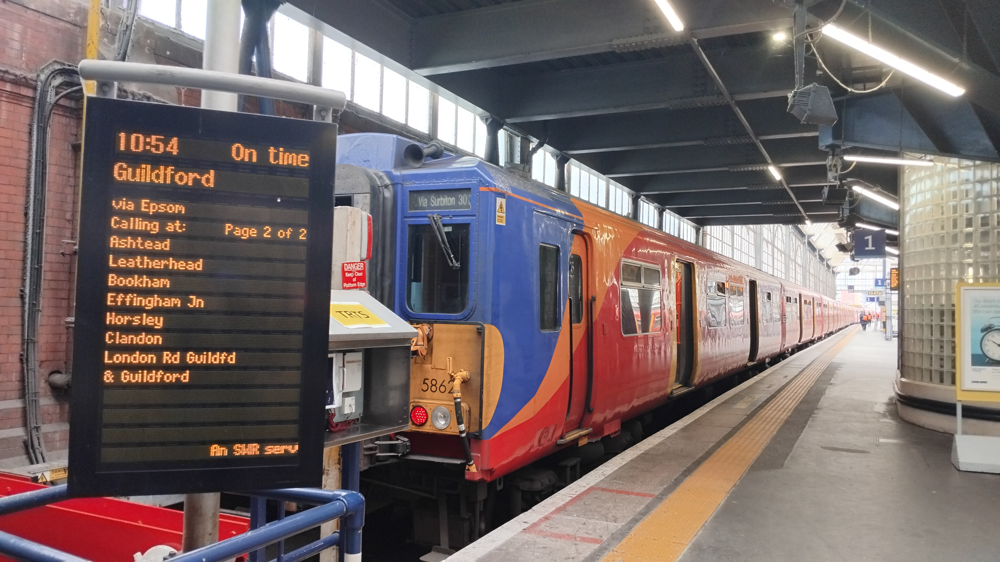

I'll admit it's not authentic me at all, but there is a LinkedIn-style version of this commentary if you add forward slash linkedin to this URL. It was too long to post at the time and it's sat dormant ever since. I'd much rather you read this version (hence no direct link) but it's there if you'd like it. Buckle up - this is a long page!

I had an event to attend in Kensington one March evening and had nothing planned for the rest of the day. I'll take any excuse to buy a Travelcard and head into town, though normally these end up being days where I float around without any real goal. When thinking about what I could do this time around, a silly idea came to me: would it be possible to visit every platform of Waterloo in a day? The answer, it transpires, is yes.
For context, London Waterloo was, at the time, the UK's busiest mainline station and is certainly the station with the most mainline platforms - there's 24 in total. Platforms 1-6 tend to be used for suburban services via Wimbledon; 7-16 for long-distance services from the South West, Portsmouth and Southampton; and 20-24 for the Windsor-side services, out towards Reading or Windsor and around the suburban loops. Platforms 17-19 were awkward, only really being used for peak-time extras and so required a bit more thought.
The rules, if I can call them that, were quite simple. I had about seven hours and I simply needed to arrive or depart on a service at each of these 24 platforms: a quick bit of maths gives 17.5 minutes per platform, plenty of time to account for a 10 minute journey to Clapham Junction. Clapham Junction, it would transpire, was the key to this puzzle - whilst you could tick off the lower platforms by turning around at Vauxhall, therefore completing them much more quickly, the middle and higher numbered platforms were first/last stop Clapham Jn, necessitating a fair few trips up and over the bridge during the course of the day.
I began the planning phase by bringing up all of the arrivals and departures between 1030 and 1730, my 'challenge time'. I then struck through all of the Alton, Portsmouth and diesel services which ran non-stop through Clapham, as well as those which were officially pick-up only at Clapham (in the true spirit of the challenge). This left me with a pretty predictable clockface timetable of arrivals to scour the platforms from. I then jotted these down and noted whether they called at Vauxhall or not, again to make my life as easy as possible. By sorting by platform, it was easy to see those which would be tricky - platform 6, despite being on the 'easier' side of the station, seemed to only get one arrival at about half past 11 - and fix those into my timeline of the day.
From there, I could then add in trips to get me to and from these important trains. For example, most of the middle platforms could only be reached on arriving trains due to these pick up restrictions, meaning I needed to plan in time to get me to Clapham Junction and meet the trains. This presented an opportunity - accidentally ticking off some of the easier platforms to make these trickier links - and helped me to fill in more time in my day. I suppose I was lucky in that none of these harder platforms were impossible, i.e. with their sole arrivals coming in within a couple of minutes of each other, though I still had nearly a dozen platforms yet to fill.
It was quite easy to fill in almost all of the other platforms, but it took a while to find a permutation where I could visit every platform and minimise any dangerously short connections, especially since small delays coming into and out of a terminus as large as Waterloo are inevitable. I eventually managed to form a plan - it was then in the hands of the signallers whether it would all work out!
| Departing | Arriving | Headcode | Actual Departure |
|---|---|---|---|
| London Waterloo (p1) | Clapham Junction (p11) | 2D23 | 10:53 |
| Clapham Junction (p7) | London Waterloo (p11) | 2P30 | 11:03 |
| London Waterloo (p6) | Vauxhall (p8) | 2K25 | 11:26 |
| Vauxhall (p7) | London Waterloo (p2) | 2M28 | 11:36 |
| London Waterloo (p24) | Clapham Junction (p6) | 2S31 | 11:52 |
| Clapham Junction (p7) | London Waterloo (p10) | 1W54 | 12:11 |
| London Waterloo (p1) | Clapham Junction (p11) | 1D29 | 12:23 |
| Clapham Junction (p7) | London Waterloo (p8) | 1L36 | 12:37 |
| London Waterloo (p5) | Vauxhall (p8) | 2K31 | 12:56 |
| Vauxhall (p7) | London Waterloo (p3) | 2M34 | 13:05 |
| London Waterloo (p5) | Clapham Junction (p11) | 2H33 | 13:11 |
| Clapham Junction (p7) | London Waterloo (p12) | 2L40 | 13:30 |
| London Waterloo (p23) | Clapham Junction (p6) | 2C39 | 13:49 |
| Clapham Junction (p4) | Vauxhall (p1) | 2U38 | 14:07 |
| Vauxhall (p2) | London Waterloo (p16) | 2S38 | 14:22 |
| London Waterloo (p21) | Vauxhall (p3) | 2U41 | 14:32 |
| Clapham Junction (p7) | London Waterloo (p7) | 1A44 | 14:48 |
| London Waterloo (p15) | Clapham Junction (p5) | 2V41 | 15:07 |
| Clapham Junction (p7) | London Waterloo (p9) | 1A46 | 15:19 |
| London Waterloo (p14) | Vauxhall (p3) | 2S47 | 15:52 |
| Vauxhall (p7) | London Waterloo (p4) | 2G46 | 16:02 |
| London Waterloo (p19) | Vauxhall (p3) | 2R45 | 16:14 |
| Vauxhall (p1) | London Waterloo (p21) | 2V41 | 16:26 |
| London Waterloo (p22) | Vauxhall (p3) | 2U49 | 16:32 |
| Vauxhall (p2) | London Waterloo (p17) | 2K41 | 16:43 |
| London Waterloo (p19) | Vauxhall (p3) | 2S51 | 16:51 |
| Vauxhall (p1) | London Waterloo (p20) | 2V43 | 16:58 |
| London Waterloo (p18) | Clapham Junction (p6) | 1N91 | 17:13 |
| Clapham Junction (p7) | London Waterloo (p13) | 2P56 | 17:31 |